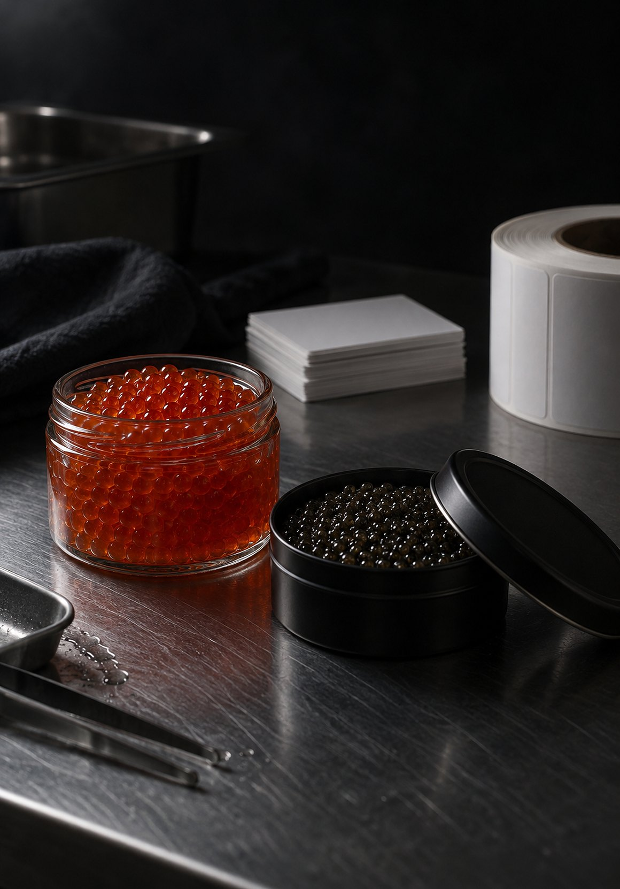
Нам доверяют
От сырья до готовой партии
Берём на себя фасовку, упаковку, маркировку и подготовку продукции к отгрузке
- Приёмка
- Контроль
- Фасовка
- Этикетирование
- Маркировка
- Упаковка
- Отгрузка
Этапы работы
-
01
Приёмка
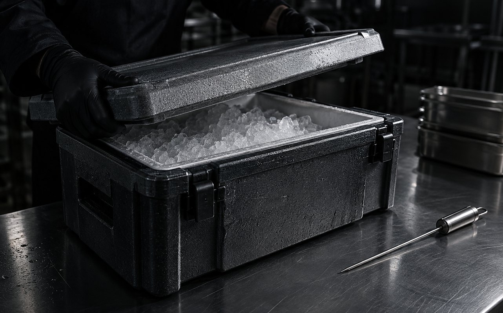
Принимаем сырьё, сверяем документы, проверяем температуру и условия транспортировки.
-
02
Контроль
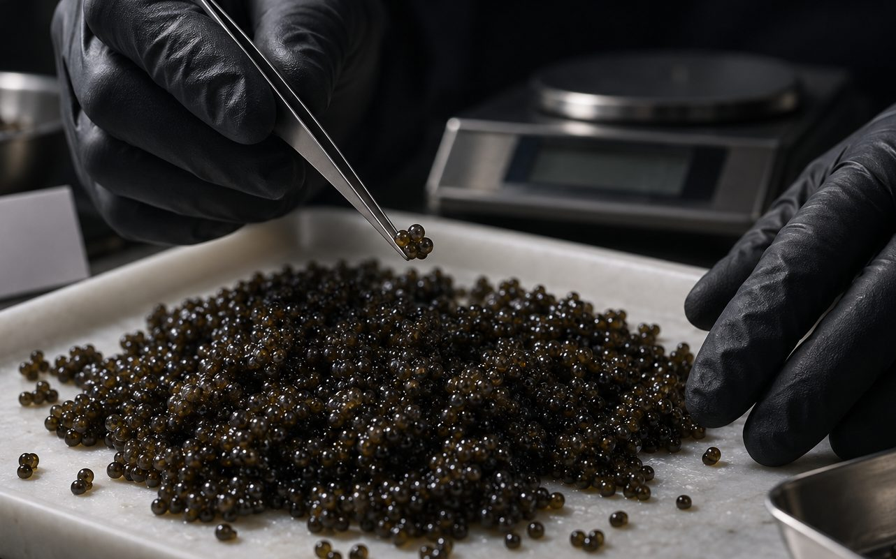
Входной контроль: органолептика, калибр икринок, плотность оболочки, массовая доля соли.
-
03
Фасовка
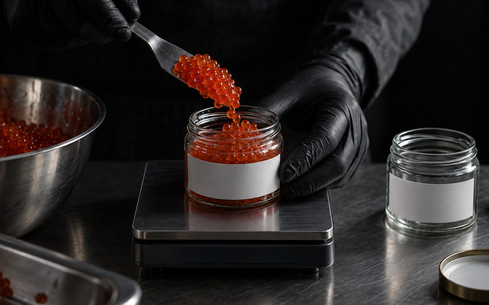
Фасуем в подобранную тару с контролем веса каждой единицы и минимальными потерями продукта.
-
04
Упаковка
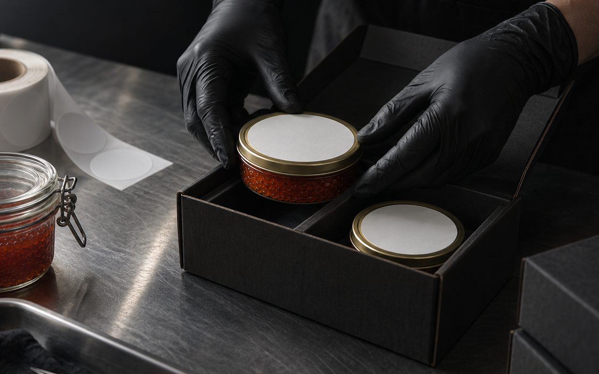
Клеим этикетку, наносим маркировку партии, укладываем в короб и передаём на склад отгрузки.
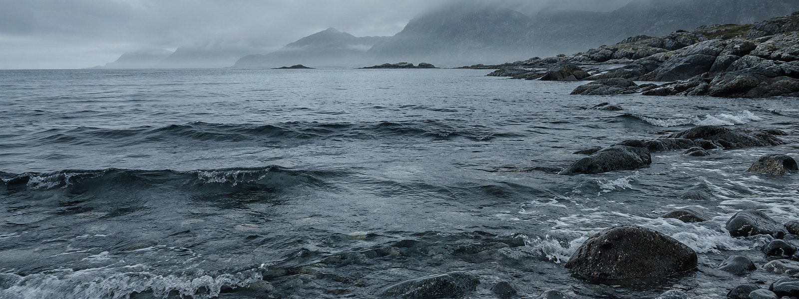
Качество начинается с сырья
Фасовка сохраняет главное — качество продукта
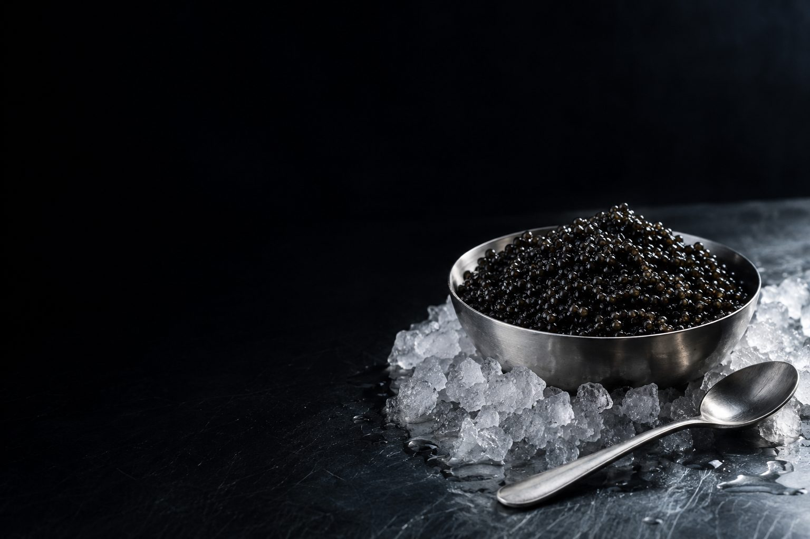
Фасуем ваше сырьё или предоставляем своё
Работаем в двух форматах: фасуем сырьё заказчика или предоставляем сырьё из собственного наличия. В наличии — сертифицированное сырьё для фасовки с необходимым комплектом документов.
Красная икра — лососёвых дальневосточного промысла, в том числе Камчатского региона, а также икра форели аквакультурного производства из Карелии. Чёрная икра — осетровых аквакультурных хозяйств с подтверждённым происхождением и полным комплектом необходимых документов.
Сырьё заказчика принимаем к фасовке при наличии необходимых документов и соблюдении требований к транспортировке и температурному режиму.
ВЕТИС, «Честный ЗНАК» и ввод в оборот
Работаем с системой ветеринарной прослеживаемости ВЕТИС и обеспечиваем маркировку продукции в системе «Честный ЗНАК».
При необходимости берём на себя ввод готовой продукции в оборот. Если маркировка и ввод в оборот требуются с нашей стороны, услуга рассчитывается отдельно. В этом случае срок выполнения заказа увеличивается на время, необходимое для оформления маркировки и ввода продукции в оборот.
- Ваше сырьё
- Фасуем и маркируем
- Наше сырьё
- Уже в наличии и готово к фасовке
- Сырьё
- Икра лососевых и осетровых
- Холодовая цепь
- Без разрыва от поставщика до цеха. Сырьё, доставленное с нарушением температурного режима, в работу не принимается
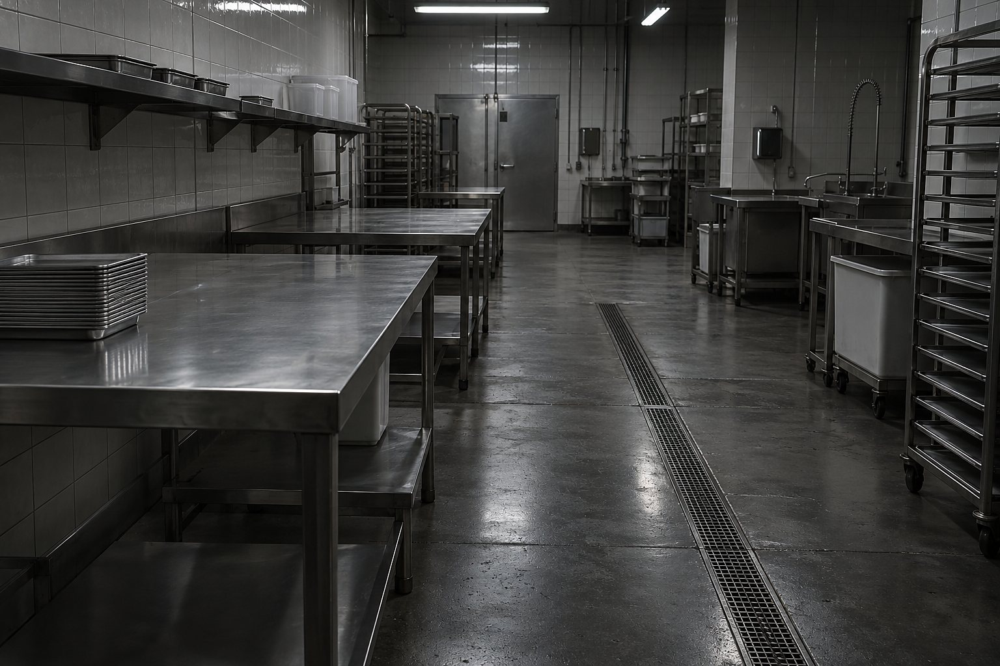
Производство
Площадка в Москве: фасовочный цех, участок этикетирования и маркировки, зона хранения и отгрузки готовой продукции.
Фасовочный цех
Помещение соответствует требованиям к температурному режиму для фасовки. Контролируем температуру в цеху, сохраняя свежесть и качество продукта.
Фасовочная линия
Дозирование и контрольное взвешивание каждой единицы, фасовка в сертифицированные жестяные банки Desjardin, стеклянные и пластиковые банки. Укупорка всех видов тары.
Этикетирование
Наклейка этикетки и контрэтикетки, маркировка QR-кодом «Честного ЗНАКа», проверка читаемости кода перед укладкой.
кг готовой продукции в сутки
вида тары, 16 объёмов фасовки
склад хранения и отгрузки
рабочих дня от заявки до отгрузки
Тара и маркировка
-
01
Икра
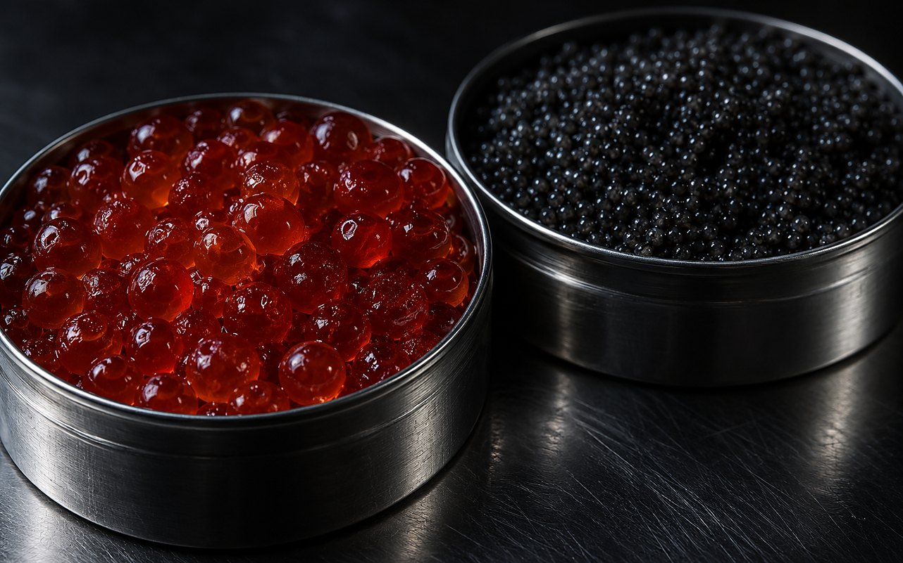
Красная и чёрная икра фасуются в одном цехе на отдельно организованных рабочих зонах. Все процессы выполняются с соблюдением санитарных требований и контролем температуры.
-
02
Стекло и жесть
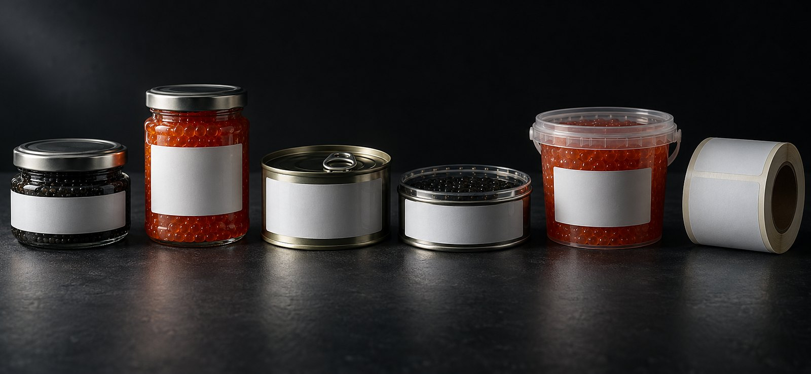
Банки с крышкой твист-офф, жестяные банки Desjardin, синие жестяные банки «Астрахань. Легенда» со жгутом и пищевая пластиковая тара — четыре вида тары, шестнадцать объёмов фасовки.
-
03
Этикетирование
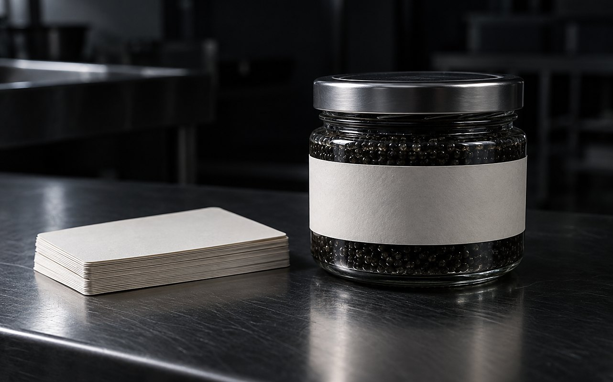
Клеим готовую этикетку вашего бренда или разрабатываем макет под вашу продукцию. Разработка и печать макета с нашей стороны — за дополнительную стоимость.
-
04
Маркировка
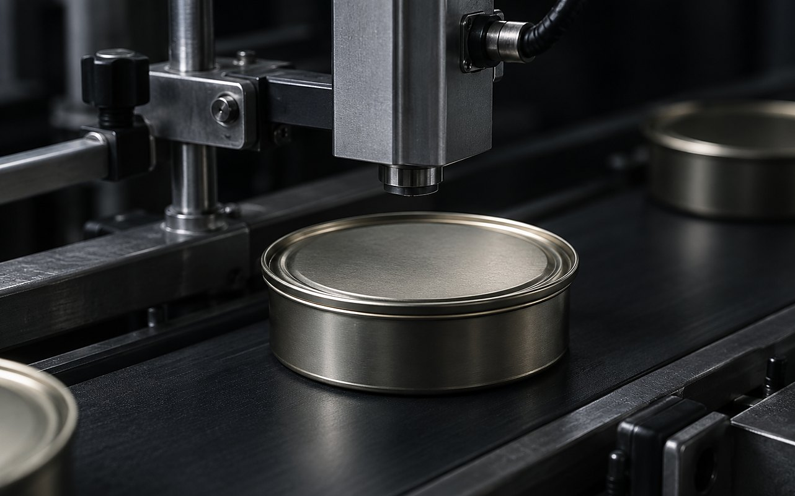
QR-код размещаем на боковой части банки, а на контрэтикетке — всю необходимую информацию о продукте: наименование, вид рыбы, состав, дату выработки и срок годности. Маркировка оформляется по требованиям ВЕТИС и «Честного ЗНАКа».
| Тара | Материал | Объёмы фасовки | Продукт |
|---|---|---|---|
| Банка стеклянная | Стекло, крышка твист-офф | 100 · 250 · 500 г | Красная |
| Банка пластиковая | Пищевой пластик | 250 · 500 г | Красная |
| Банка Desjardin | Жесть | 30 · 50 · 100 · 250 · 500 г | Чёрная |
| Банка стеклянная | Стекло, крышка твист-офф | 50 · 100 · 250 · 500 г | Чёрная |
| «Астрахань. Легенда» | Жесть синяя, со жгутом | 100 · 250 г | Чёрная |
Готовая
партия
Партия уходит со склада укомплектованной: продукция, маркировка, короба и полный пакет документов.
-
01
Декларация ЕАЭС N RU Д-RU.РА06.В.31427/23
Декларация о соответствии на продукцию
-
02
СТО 57865978-001-2022
Стандарт организации, по которому выпускается продукция
-
03
ТУ 10.20.26-001-2023
Технические условия, по которым выпускается фасованная икра
-
04
HACCP / ISO 22000
Система менеджмента безопасности пищевой продукции на производственной площадке
-
05
Контроль каждой партии
Органолептические показатели, калибр, массовая доля соли и температура контролируются при работе с каждой партией
-
06
Хранение
Чёрная икра хранится при −2…−4 °C, красная — при −2…−6 °C
-
07
Отгрузка
Забор продукции вашим транспортом или доставка по согласованию
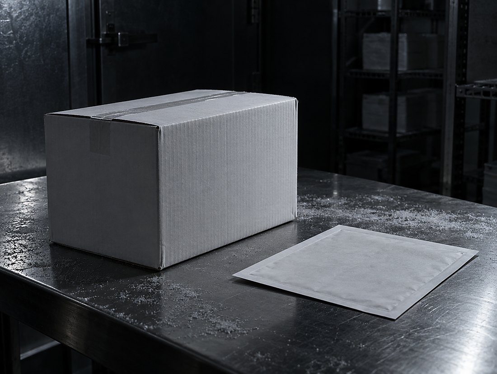
Работаем в государственных системах
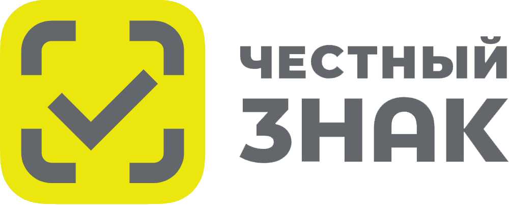
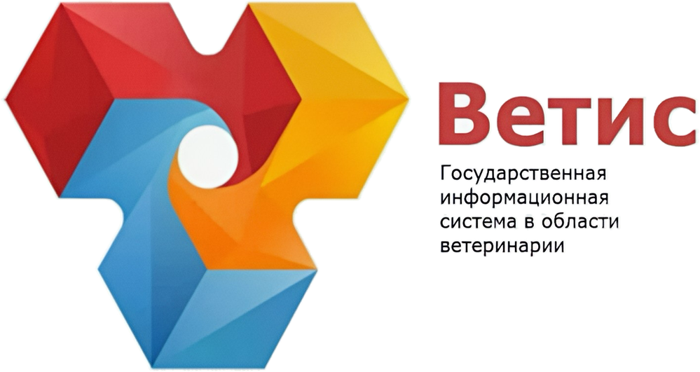
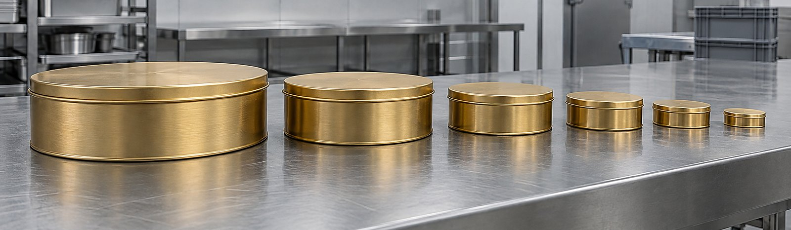
О компании
Фасуем для ресторанов, розничных сетей и корпоративных клиентов — и выпускаем продукцию под собственной торговой маркой.
Гурман Гуру — гастрономическая компания с собственной фасовочной площадкой в Москве и экспертизой в работе с икрой и деликатесами.
Фасуем продукцию для ведущих ресторанов Москвы и Санкт-Петербурга, корпоративных клиентов и собственной розницы.
Собственное производство позволяет контролировать весь процесс — от приёмки сырья и фасовки до маркировки, хранения и отгрузки готовой продукции.
- Где представлена наша продукция
-
- Черёмушкинский рынок — торговая точка «ГУРМАН ГУРУ»
- Рублёвский привоз — торговая точка «ГУРМАН ГУРУ»
- Филиал Даниловского рынка на Новой Риге, торговый комплекс Estate Mall — торговая точка «Острова»
Как начать
От заявки до готовой к отгрузке партии — при готовом сырье и документах в тот же день.
День 1
Заявка и приёмка
Уточняем продукт, объём и тару. Принимаем сырьё и проверяем необходимые документы, ВЕТИС и данные для маркировки.
День 1
Фасовка
Если сырьё и документы полностью готовы — фасуем день в день и готовим продукцию к отгрузке.
День 2–3
Дополнительное оформление
Если требуется наша помощь с «Честным ЗНАКом», ВЕТИС или есть небольшие нюансы в документах, срок может увеличиться до 2–3 рабочих дней.
Экономика
и условия
Стоимость фасовки и то, как делятся работы по маркировке и ветеринарным документам.
Фасовка чёрной икры
4 000 ₽/кг
Тара
150 ₽/банка
Оплачивается отдельно. Минимальной партии нет.
-
«Честный ЗНАК»
Коды маркировки и ввод в оборот оформляем мы или заказчик. При оформлении с нашей стороны — по полной стоимости услуги; при самостоятельном оформлении заказчиком — 10 % от стоимости фасовки.
-
ВЕТИС / Меркурий
Ветеринарное сопровождение партии оформляем мы. При самостоятельном оформлении заказчиком — скидка 10 % от стоимости фасовки.
-
Отгрузка
Забор продукции — вашим транспортом или доставка по согласованию.
Вопросы
Короткие ответы на то, что спрашивают до первого звонка.
Какая минимальная партия
Чьё сырьё идёт в работу
Кто делает этикетку
Кто оформляет «Честный ЗНАК»
Кто оформляет ВЕТИС / Меркурий
Сколько занимает весь цикл
Как организована отгрузка
Обсудить
партию
Напишите продукт, тару и объём — вернёмся с расчётом и сроком по вашей заявке.
- Заявки и общие вопросы
- sale@gurman.guru · +7 (926) 676-59-58
- Руководитель подразделения по производству и фасовке икры
- Карпюк Никита Александрович
+7 (926) 634-35-52 · labgurman@ya.ru - Мастер производства
- Никитин Артём Сергеевич
+7 (936) 125-16-17 - Адрес производства
- г. Москва, ул. Рябиновая, владение 43А, строение 1